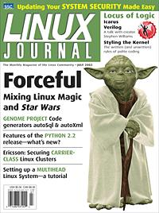

Shutdown Archive web server
Search:
Linux Journal
Issue #99/July 2002

Features
autoSql and autoXml: Code Generators from the Genome Project
by Jim Kent and Heidi Brumbaugh
When working with large amounts of data, save yourself some time with these tools, developed as a result of work on the Genome Project.
Multiheading Linux Systems
by Brian Gollsneider and Arthur M. Messenger
Get set up for those jobs that require double the screen space.
Icarus Verilog: Open-Source Verilog More Than a Year Later
by Stephen Williams and Michael Baxter
More competitive than ever—and still free!
Interview
A Conversation with Stephen Williams
by Michael Baxter
Stephen reveals the secrets of just how Icarus Verilog has achieved amelioration.
Indepth
Keeping Up with Python: the 2.2 Release
by Wesley J. Chun
Unification, iterators and more—the improvements to the Python 2.2 release series.
DSI: Secure Carrier-Class Linux
by The DSI Team
Security architecture specifically for clustered environments is lacking—but that will soon change.
Toolbox
Kernel Korner
Proper Linux Kernel Coding Style
by Greg Kroah-Hartman
At the Forge
Apache 2.0
by Reuven M. Lerner
Cooking with Linux
Art Is but Engineered Reality
by Marcel Gagné
Paranoid Penguin
Staying Current without Going Insane
by Mick Bauer
GFX Industrial Light & Magic
by Robin Rowe
Columns
Focus on Software
On Engineers
by David A. Bandel
Focus on Embedded Systems
In Search of the Embedded Linux “Killer App”
by Rick Lehrbaum
Linux for Suits
The Protocol Problem
by Doc Searls
Geek Law
License Defamation
by Lawrence Rosen
Departments
Letters
upFRONT
From the Editor
Best of Technical Support
New Products
Archive Index
Shutdown Archive web server
Search:
Copyright © 1994 - 2018
Linux Journal
. All rights reserved.